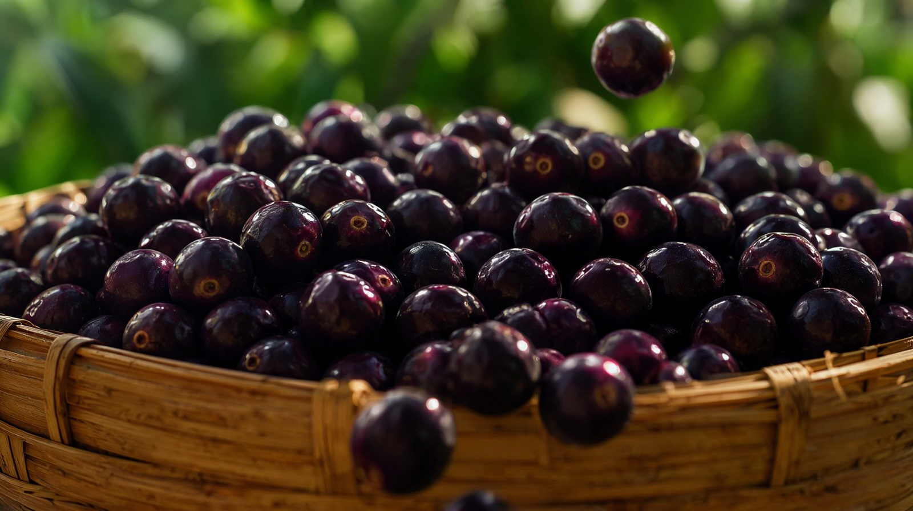
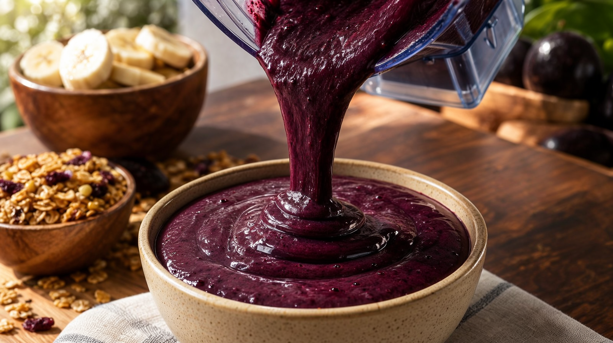
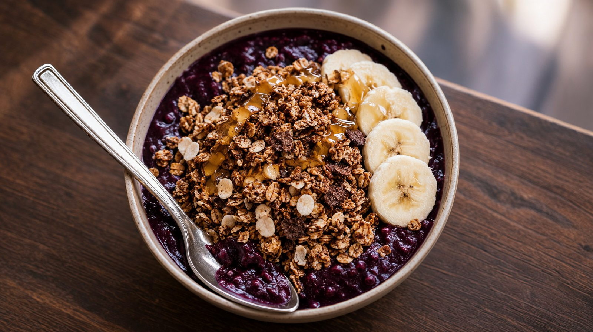
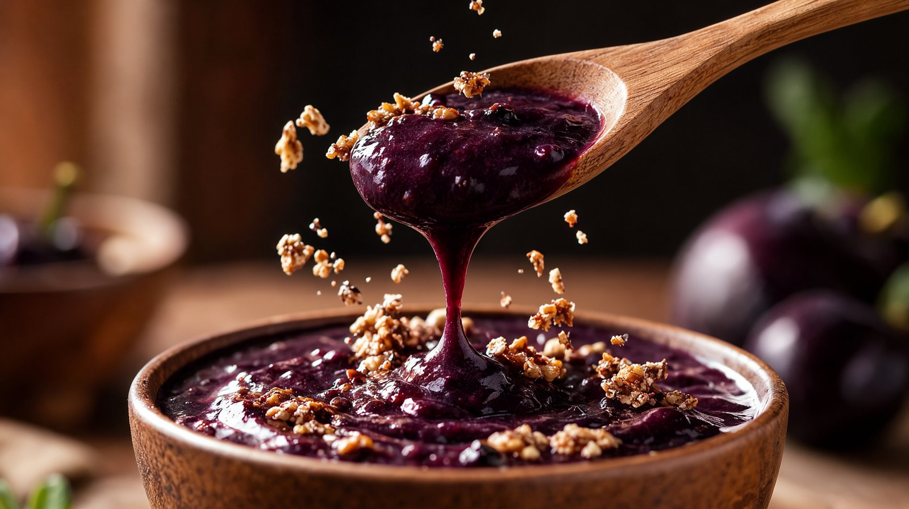
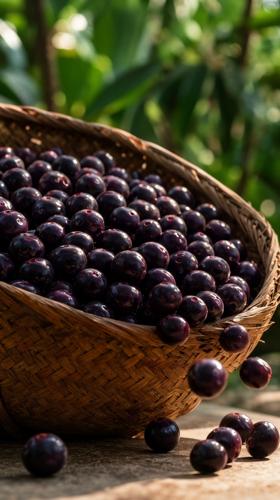
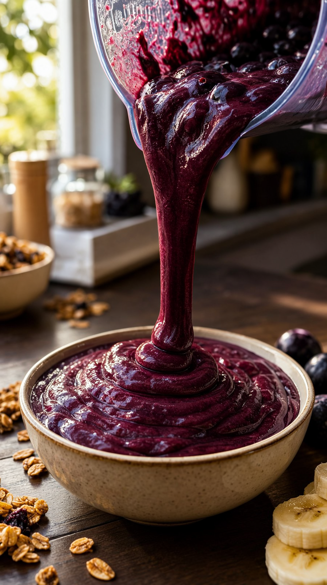
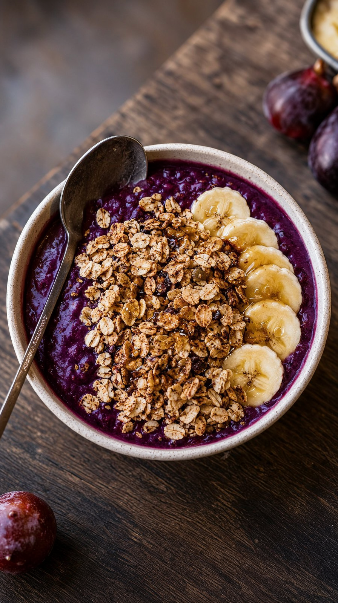
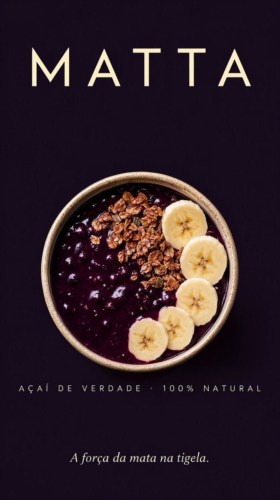

A v8 colocou a grande tese em julgamento: o Wan 14B quantizado com destilação Lightning supera o 5B? A comunidade dizia que sim — a nossa RTX 3070 disse não (init de 14 min + 850 s/step). O kit seguiu no Turbo consagrado, com o produto mais brasileiro da série: MATTA, açaí de verdade — e o QA de áudio agora fecha o ciclo com transcrição.
A tese da v8, testada a ferro e fogo
| Wan 2.2 Turbo 5B (GGUF Q5) | Wan 2.2 A14B + lightx2v 4-step (Q4_K_M) | |
|---|---|---|
| Pesos | 3,6 GB (1 modelo) | 2×9,0 GB (par high/low) + 1,3 GB de LoRAs |
| Init do modelo | ~30 s | 14 min por expert |
| Tempo por step | ~14 s | 850 s |
| Take 5 s (121f) | 9 min | projeção ~90 min — abortado após 2 h sem completar |
| Veredito | Produção | Inviável nesta GPU (relatos da comunidade eram de placas 12–24 GB) |
wan14_lightning_api.json está
pronto e validado (grafo high/low + LoRAs + VAE 2.1). A pesquisa da v8 também mapeou o teto real:
na 8 GB, o 5B Turbo é o ponto ótimo qualidade/tempo para vídeo.O outro achado da v8
faster-whisper small/int8 na CPU entrou no ciclo de QA:
| Caso | Resultado |
|---|---|
| Locução Piper (fala) | ✓ Transcreve — "A força da mata na tigela." saiu perfeita inclusive no master final mixado. O brand "Matta" sai mushy na voz faber → solução: marca fica no jingle + end card, locução só com a frase perfeita. |
| Jingle cantado | ✗ O modelo small não separa letra de música — QA de canto continua sendo ouvido humano (vocês!). |
O produto novo · 20 s · 1080p · 48 fps








A jornada
| v1 | v2 | v3 | v4 | v5 | v6 | v7 | v8 | |
|---|---|---|---|---|---|---|---|---|
| Produto | Perfume | Café | Cerveja | Mel | Chocolate | Vinho | Cachaça | Açaí |
| Vídeo | 480p | misto | misto | 704p | 1080p | 1080p | 1080p h+v | 1080p h+v (+14B julgado) |
| QA | olho | VLM | VLM+ | VLM+ | VLM+ | VLM+ | VLM+ | VLM + transcrição de áudio |